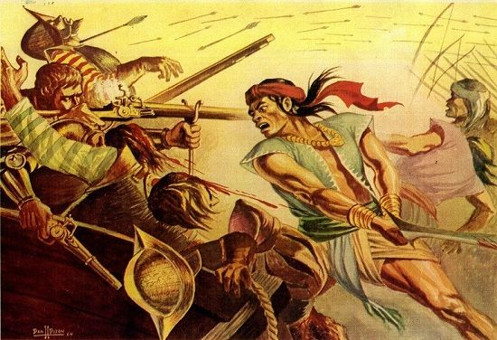

Year 1942Liberation of the Philippines from the Japanese | |
 |
April 9,1942 The majority of the troops were suffering from disease and starvation when they surrendered on April 9, 1942. They were forced to walk to their prison camp, some 65 miles away, under extreme tropical conditions with no provisions for food, water, shelter, or medicine. Those who could no longer go on were beaten, bayoneted, shot, and even beheaded by their Japanese captors. |
| April 9,1942 Thousands died in what became known as the Bataan Death March. In one case, a group of 350 soldiers who had just surrendered were herded to a river and massacred. But despite the agony of defeat, the USAFFE soldiers delayed the Japanese Army’s 50-day timetable by holding on to the Bataan Peninsula for 99 days. | |
| 1942 Although Japan granted the Philippines its “independence” in 1943 as part of its Greater East Asian Co-Prosperity Sphere program, the Filipinos suffered greatly from atrocities inflicted not only on suspected guerrillas but on many innocent civilians. Torture, rape, pillage, and massacres, sometimes of entire villages, took place all over the country. | |